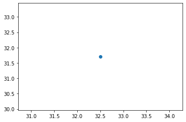
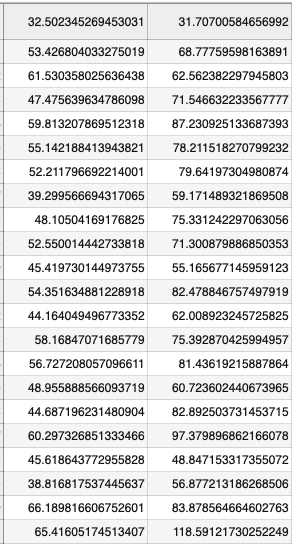
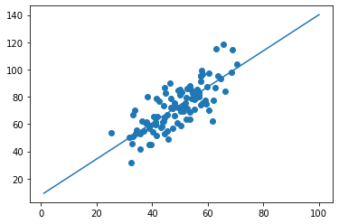
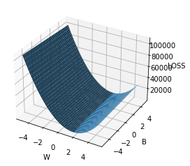
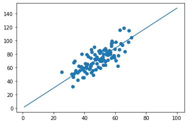

这个项目用了下面的库
numpy matplotlib这个项目的数据格式点击链接下载数据
这个项目的数据有两项，我们可以理解成x坐标和y坐标 如下图
x: 32.502345269453031
y: 31.70700584656992

引入项目所需要的库
# 用于处理数据 import numpy as np
# 用于画图
import matplotlib.pyplot as plt损失函数
\[loss=\sum_{i=1}^{n}{(w*x_i+b-y_i)^2}\]- 为什么这样定义损失函数
观察下面的图，我们画了一条直线准备穿过这两个点。显然这条直线没有达到预期，其中存在一定的误差。那该怎么表示这个误差呢，我们可以取一个 x 然后计算出 y 值，对比真实的 y 值也就是 \[w*x_i+b-y_i\] 这样我们就可以得到计算出来的 y 值和真实值之间的误差。但是这样会出现一个问题----误差会出现正负两种情况。所以就加上了绝对值 \[(w*x_i+b-y_i)^2\] 然后再把每个点的误差相加就形成了损失函数 \[\sum_{i=1}^{n}{(w*x_i+b-y_i)^2}\]

- 根据上面的损失函数编写代码
def compute_error_for_line_given_points(b, w, points): # 用于保存累加和
totalError = 0
# 这个for循环就相当于上面的累加符号
for i in range(0, len(points)):
# 取出二维数组中的第i个数组的第一个数据
x = points[i, 0]
# 取出二维数组中的第i个数组的第二个数据
y = points[i, 1]
# ((w * x + b) - y) ** 2 就是上面公式单个损失值
totalError += ((w * x + b) - y) ** 2
# 返回损失函数一般会除元素数量
return totalError / float(len(points))求解最小化
w和b- 目标优化式
\[(w^*, b^*) = argmin\sum_{i=1}^{n}{(w*x_i+b-y_i)^2}\]
求解的两种方法
- 最小二乘法
我们先将损失函数loss对w求导和对w求导
\[
\begin{split}
\frac{\partial{loss}}{\partial{w}}&={2\sum_{i=1}^{n}{(w*x_i+b-y_i)*x_i}} \\
&=2({w\sum_{i=1}^{n}{x_i^2}-\sum_{i=1}^{n}{(y_i-b)*x_i}})
\end{split}
\]
\[
\begin{split}
\frac{\partial{loss}}{\partial{b}}&={\sum_{i=1}^{n}2(w*x_i+b-y_i)} \\
&= 2(n*b-\sum_{i=1}^{n}{(y_i-w*x_i)})
\end{split}
\]
让上两式为0可以得到 w 和 b 最优解的闭式(closed-form)解
\[
\begin{eqnarray*}
w &=& \frac{\sum_{i=1}^{n}{y_i(x_i-\overline{x})}}{\sum_{i=1}^{n}{x_i^2}-{\frac{1}{n}{(\sum_{i=1}^{n}{x_i})^2}}} \\
\overline{x} &=&{\frac{1}{n}{\sum_{i=1}^{n}{x_i}}} \\
b &=& \frac{1}{n}\sum_{i=1}^{n}{(y_i-w*x_i)}
\end{eqnarray*}
\]- 最小二乘法代码
# points 数据 def least_square_method(points):
# x 的平均值
x_average = 0
# 数据的长度
points_len = len(points)
# 数据的长度浮点型
N = float(points_len)
# 累加 x
for i in range(0, points_len):
# points[i, 0] 数据 x
x_average += points[i, 0]
# w 式子中的3个子式 w_1 分母中左边那个 w_2 分母中右边那个 w_3 分子
w_1 = w_2 = w_3 = 0
# x_average 中存放的是 x 累加的和还没有平均
# x 的平方除以数据长度
w_2 = x_average ** 2 / N
# 求出平均数
x_average /= N
# 求 w_1 和 w_3
for i in range(0, points_len):
w_1 += points[i, 0] ** 2
w_3 += points[i, 1] * (points[i, 0] - x_average)
# 计算 w
w = w_3 / (w_1 - w_2)
# 计算 b
b = 0
for i in range(0, points_len):
b += (points[i, 1] - w * points[i, 0])
b /= N
return [b, w]- 通过最小二乘法求出来的结果
def run_least_square_method(): # 获取文件中的数据
points = np.genfromtxt('data.csv', delimiter=',')
# 求出直线的 w 和 b 值
b, w = least_square_method(points)
# 画图 x 点随机生成
x = np.linspace(1, 100, 100)
# 根据 x w b 求出 y
y = x * w + b
# 画数据点
plt.scatter(points[:, 0], points[:, 1])
# 划线
plt.plot(x, y)
plt.show()
# 通过最小二乘法求出来的误差
error = compute_error_for_line_given_points(b, w, points)
print('error = {0}'.format(error))
- 最小二乘法
梯度下降法
这个项目的损失函数

梯度下降的原理：损失函数可以说是错误率，这个值越小越好，显然只有到达这个图最低点时错误率就是最小的。假设这个曲面中间有一点，那么他用什么办法可以到达最低点呢（也就是他应该往哪个方向移动他才能到达最低点）。经过研究当沿着当前点所在位置的切线方向走是最快的，且可以到达最低点。所以就有了下面的公式。（其中lr为学习率，也就是防止走的过快超过了最低点）\[
\begin{eqnarray*}
w^{'}&=&w-lr*\frac{\partial{loss}}{\partial{w}} \\
\frac{\partial{loss}}{\partial{w}}&=&2*\sum_{i=1}^{n}{(w*x_i+b-y_i)*x_i} \\
b^{'}&=&b-lr*\frac{\partial{loss}}{\partial{b}} \\
\frac{\partial{loss}}{\partial{b}}&=&2*\sum_{i=1}^{n}{(w*x_i+b-y_i)}
\end{eqnarray*}
\]- 梯度下降代码
# b_current 当前的 b 值 # w_current 当前的 w 值
# points 数据
# learningRate 学习率
def step_gradient(b_current, w_current, points, learningRate):
# b 的梯度，也就是 b 导数值
b_gradient = 0
# w 的梯度，也就是 w 导数值
w_gradient = 0
# 数据长度
N = float(len(points))
# 上面公式中累加的过程
for i in range(0, len(points)):
# 取出 x 值
x = points[i, 0]
# 取出 y 值
y = points[i, 1]
# 由求导之后的公式变成的式子
b_gradient += (2/N) * ((w_current * x + b_current) - y)
w_gradient += (2/N) * x * ((w_current * x + b_current) - y)
# 式子整合求出经过梯度下降的 b
new_b = b_current - (learningRate * b_gradient)
new_w = w_current - (learningRate * w_gradient)
return [new_b, new_w]- 通过梯度下降求出来的结果
# 控制梯度下降算法迭代次数 # points 数据
# starting_b 初始化b
# starting_w 初始化w
# learning_rate 学习率
# num_iterations 迭代次数
def gradient_descent_runner(points, starting_b, starting_w, learning_rate, num_iterations):
b = starting_b
w = starting_w
# 迭代
for i in range(num_iterations):
# 没迭代一次就调用一次梯度下降算法
b, w = step_gradient(b, w, np.array(points), learning_rate)
return [b, w]# 运行梯度下降算法 def step_gradient_run():
# 获取数据
points = np.genfromtxt("data.csv", delimiter=",")
# 初始化学习率
learning_rate = 0.0001
# 初始化 b 和 w
initial_b = 0
initial_w = 0
# 初始化迭代次数
num_iterations = 1000
print("b = {0}, w = {1}, error = {2}"
.format(initial_b, initial_w, compute_error_for_line_given_points(initial_b, initial_w, points)))
[b, w] = gradient_descent_runner(points, initial_b, initial_w, learning_rate, num_iterations)
# 画图 x 点随机生成
x = np.linspace(1, 100, 100)
# 根据 x w b 求出 y
y = x * w + b
# 画数据点
plt.scatter(points[:, 0], points[:, 1])
# 划线
plt.plot(x, y)
plt.show()
print("b = {0}, w = {1}, error = {2}"
.format(b, w, compute_error_for_line_given_points(b, w, points)))